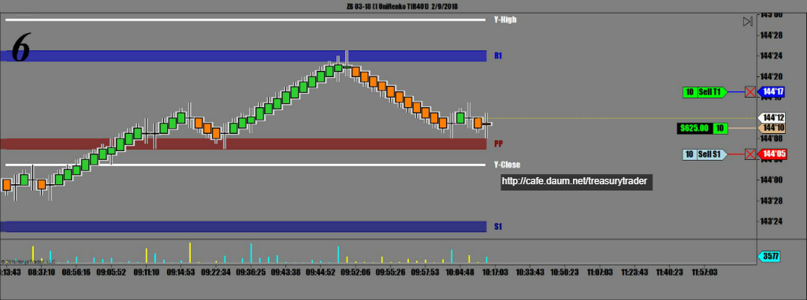
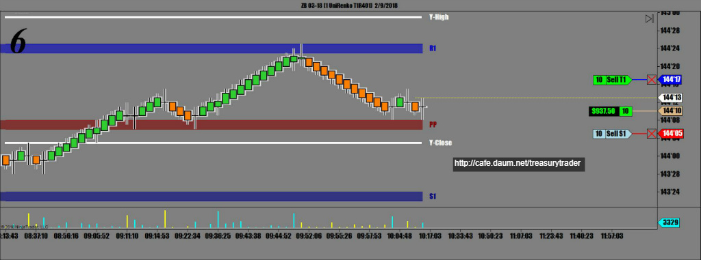
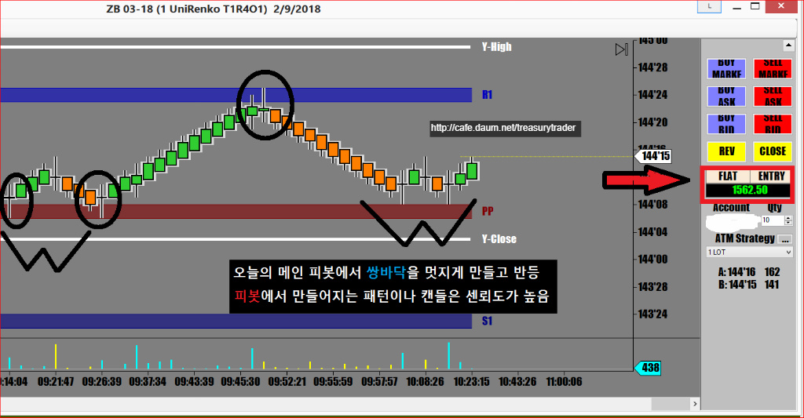

금요일은 통상적으로 일찍 끝내고 주말 정리를 하는데 이번주 장세가 너무 널뛰기 장세인지라
오늘도 긴장속에 지켜보는데 좀처럼 타이밈을 못잡고 있다가 결국 증시가 폭락하면서 기회가 왔음
오늘의 메인 피봇에서 지지받고 쌍바닥 반등을 하는 순간 진입



조금더 갈것 같았는데 주말이라 기분좋게 끝내려고 일찍 나옴
오늘수익 $1562.50
매매요약
큰 스윙으로 널뛰는 장세에 기회잡기가 어려웠으나
오랜 기다림끝에 찾아온 피봇에 만들어진 쌍바닥에서 진입
피봇에서 쌍바닥 받아치기 기법
카페를 처음 만들어서 뭔가로 채워야 하기 때문에
나름 그동안의 경험으로 깨달은것들을 두서없이 많이 올렸습니다
그동안 올린 매매일지안에 제가 아는 대부분의 기법이나 지식이 올려져 있습니다
다음주부터는 특별한 매매나 함께 공유하고 싶은 기법등으로 매매한게 있을 때만 올리겠습니다
회원님들의 매매 이야기도 올려주세요